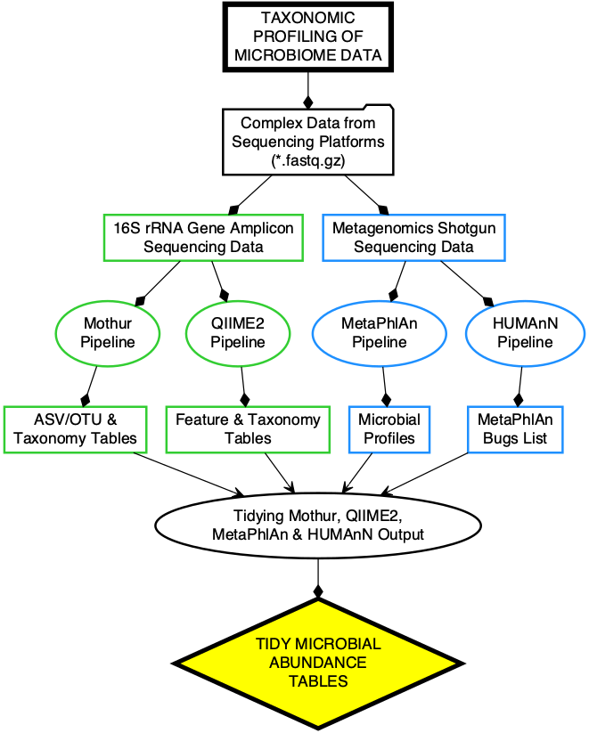

View book source

The default format used in this practical user guide is compressed fastq, *.fastq.gz.
*.fastq.gz
gzip
Run the command below only if the sequencing data files are not compressed!
gzip *.fastq